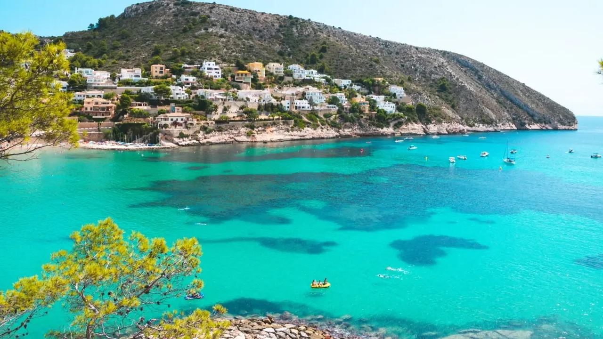
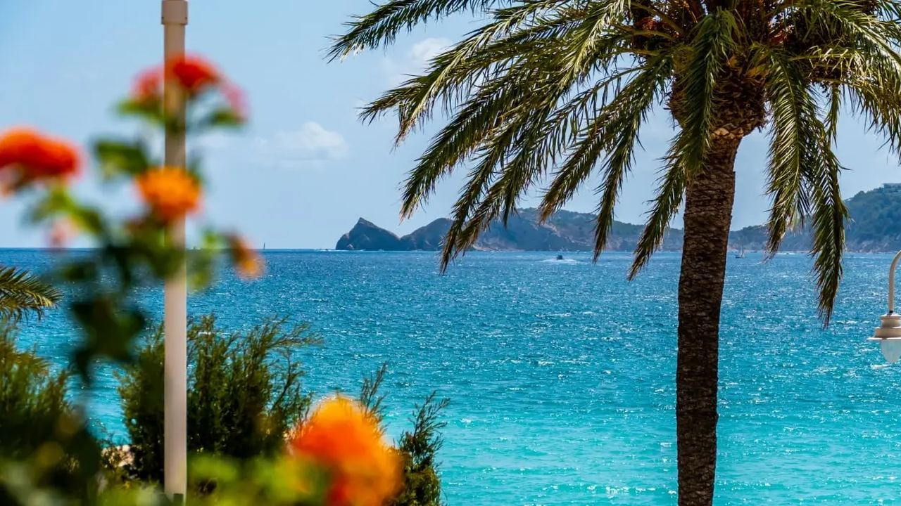
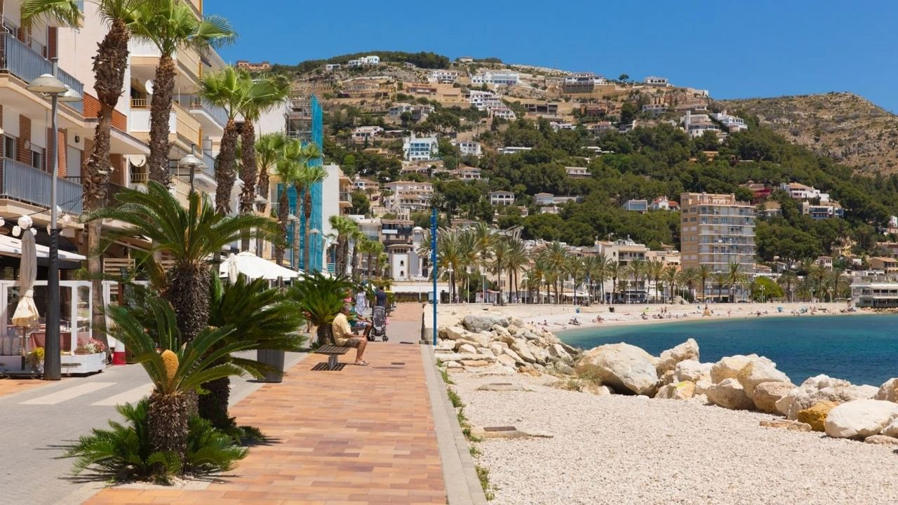
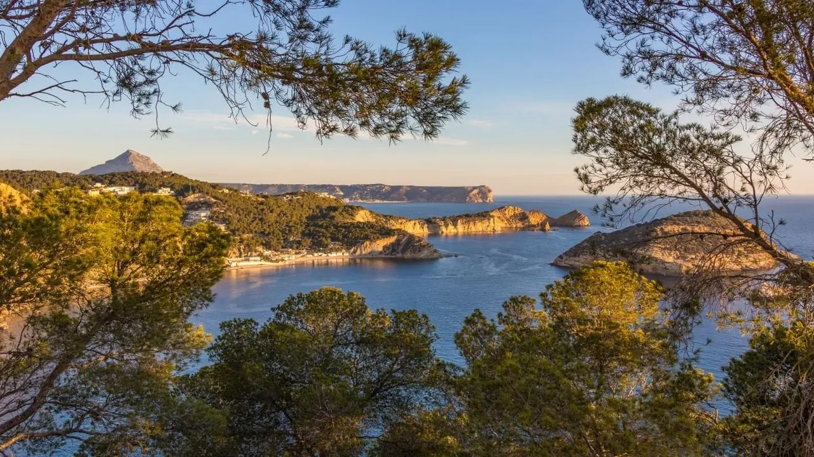
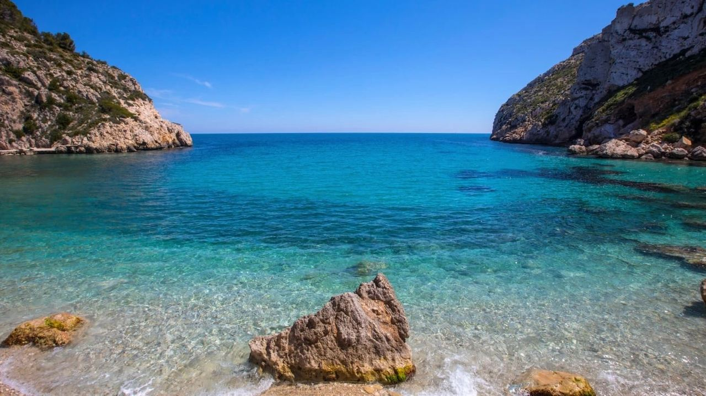
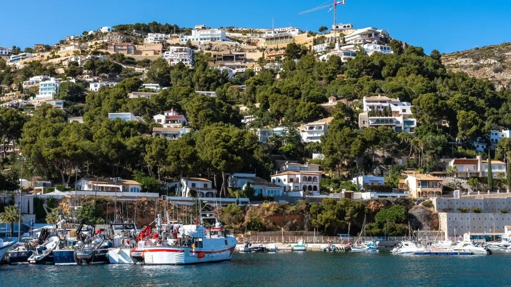

Places · Costa Blanca
Jávea: The Hidden Gem of the Costa Blanca
 By Lucyna Gacek · · updated · 4 min read
By Lucyna Gacek · · updated · 4 min read

In short: Jávea (Xàbia in Valencian) is a town of around 30,000 people in the far north of the Costa Blanca, between Dénia and Moraira. It has three centres: the historic old town, the fishing port of Duanes de la Mar and the sandy beach of El Arenal. Around them are the Montgó natural park, the capes of Sant Antoni and La Nau and more than 20 km of coast with coves such as Granadella and Portitxol. Alicante airport is about 1 hour 15 minutes away and Valencia about 1 hour 30.
Jávea is often called the hidden gem of the Costa Blanca because it sits a little away from the main motorway, protected by Montgó mountain and two capes. That position gives it a mild climate, green hills and a calmer feel than the big resorts. Low-rise building rules have kept the town human in scale, and it has one of the most international communities on the coast.
Here is what to see, where to swim and which areas people choose when they move here.
Why people love Jávea

Jávea combines sea and mountains in a way few towns can. Mornings can start with a walk on Montgó and end with a swim in a cove. The town is busy in July and August, but for the rest of the year it is relaxed and local, with markets, cafés and a strong cultural life. Many residents are from the UK, the Netherlands, Germany, Belgium and Scandinavia, so English is widely spoken, while Spanish and Valencian traditions remain very much alive.
See our properties for sale in Jávea.
Old town, port and El Arenal

- The old town (Poble) – narrow streets, houses with stone window frames and the fortified Gothic church of Sant Bertomeu. The covered market and Thursday street market are the heart of daily life.
- Duanes de la Mar (the port) – the fishing harbour with its daily fish auction, the marina, seafood restaurants and the modern, ship-shaped church of Nuestra Señora de Loreto.
- El Arenal – the sandy beach and its promenade of restaurants, bars and shops, the liveliest part of town in the evenings.
The three are linked by a long seafront walk and cycle path, about 30 minutes on foot from the port to El Arenal.
Montgó and the capes

Montgó (753 m) is a natural park with walking trails, including the climb to the summit and the easier path to the Cova de l'Aigua. On one side of the bay, Cap de Sant Antoni has a lighthouse, a marine reserve and wide views over the town. On the other, Cap de la Nau is the easternmost point of the Costa Blanca, with the Cova Tallada sea cave nearby (in summer, a visit must be booked in advance). The old windmills on the Plana de Sant Antoni are a classic sunset spot.
Beaches and coves

- El Arenal – the only big sandy beach, shallow and ideal for children.
- Cala Granadella – a pebble cove among pine woods, often listed among the most beautiful beaches in Spain. Car access is limited in summer.
- Portitxol / La Barraca – white fishermen's huts, an island just offshore and calm water.
- Cala Blanca – a small rocky cove near the Arenal, good for snorkelling.
- Cala Sardinera – a quiet pebble cove below the capes, popular with divers.
Bring water shoes, as most coves are pebble or rock. Some coves, such as Cala Ambolo, have been closed for years because of rockfalls, so check before you go.
Where to live in Jávea

- Cap de la Nau, Balcón al Mar and Granadella – cliff-top villas with sea views and infinity pools, the most exclusive part of town.
- Tosalet, Adsubia and the slopes of Montgó – private villa areas in the hills, green and quiet.
- El Arenal, Costa Nova and La Corona – closer to the beach and services, with apartments and townhouses.
- Port and old town – for those who want to walk everywhere and live like a local.
Nearby, Cumbre del Sol and Dénia are also popular with international buyers.
Everyday life and the international community
Jávea has international and Spanish schools, private clinics, tennis and padel clubs, sailing and diving clubs, and golf about 20 minutes away. The food scene is excellent, from daily fish at the port to BonAmb, a restaurant with two Michelin stars. With dozens of clubs and associations, it is easy to make friends, which is one reason many people who first came on holiday end up living here all year.
Frequently asked questions
Is Jávea the same as Xàbia?
Yes. Jávea is the Spanish name and Xàbia the Valencian one. Both are official.
How far is Jávea from Alicante airport?
About 90 km, around 1 hour 15 minutes by car via the AP-7. Valencia airport is about 1 hour 30 minutes away.
What is the best beach in Jávea?
For families, El Arenal. For scenery and snorkelling, Cala Granadella and Portitxol.
Is Jávea good for living all year round?
Yes. Unlike many resorts, Jávea stays alive in winter, with a large international community, schools, clinics and a busy cultural calendar.
Your home in Jávea
Whether you dream of a villa with a view of the capes or an apartment a short walk from the beach, we can help you choose the right part of Jávea. Get in touch and tell us what matters to you.
Sources: Xàbia Tourist Office · Generalitat Valenciana – Parc Natural del Montgó · INE – Population by municipality · Guía Michelin – BonAmb